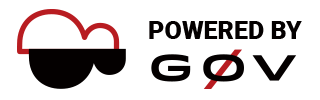

贊助 Middle2
Middle2 在 2017 年得到 g0v grant 補助 30 萬元，這筆錢預計只能夠使用一年，主要支出會在雲端主機的租借費用。目前亦有 Microsoft BizSpark 的主機贊助，若您願意提供資金贊助，或提供雲端主機贊助，歡迎與我們連絡。


Middle2 透過平台即服務 PaaS 模式
協助您永續經營您的公民科技專案
Middle2 是幫助全世界公民科技相關服務的基礎建設。
參與 g0v 活動好幾年，在黑客松現場看到很多熱心公民黑客，除了出腦力做出服務專案，還要出錢租雲端主機使用。我覺得像 Heroku 這樣的 PaaS 平台（PaaS 是 Platform As A Service 縮寫，意為「平台即服務」）對於開發網路服務相當方便，但是收費方案較昂貴，因此決定自己做一個 PaaS - Middle2。
我因此一直期許 Middle2 能夠成為屬於 g0v 的基礎建設，讓熱心的公民黑客省下更多錢，並且更輕鬆做出更多服務。感謝 2017 年 g0v 的公民科技創新獎助金提供一筆資金，讓我能夠把個人的基礎建設 Middle2 變成屬於台灣或是全世界做公民科技相關服務的基礎建設！
重點文字直接用說明方式表達出來，方便用戶直接修改內文後立即套用。
敘事基本架構先準備好，照著內文的思路編排，可確保基本內容流暢。
開源於零時政府源碼庫，直接分支就可以使用，不用擔心找不到源碼。
利用一些明確的數字可以給人更具體的感覺
Middle2 提供最常用的 PaaS 選項，包涵多程式語言支援、自訂網域等，讓您的專案不受挶限，自由發展，全力專注在推進公民科技上。
想開 PaaS 嗎？Middle2 的原始碼開放使用。
支援 PHP、nodejs、Python、Ruby 等語言
支援 nodejs package.json、Python requirements.txt、Ruby Gemfile 等相依套件設定檔
可建立 MySQL 、PostgreSQL、ElasticSearch 等資料庫使用
可透過 env 環境變數指定系統設定，如資料庫帳號密碼，API Key 等，方便程式碼與設定檔分離
支援 Custom domain ，可自訂網址
支援 Let's Encrypt，可幫服務加上 SSL 更安全
支援 Cron，可以跑需要排程的動作
Middle2.com 希望保持基本的穩定性，目前暫時不開放自由開設專案，僅允許符合以下條件的專案加入：
若您的專案符合以上的條件，請直接點擊以下按鈕來訊開通帳號：
Middle2 在 2017 年得到 g0v grant 補助 30 萬元，這筆錢預計只能夠使用一年，主要支出會在雲端主機的租借費用。目前亦有 Microsoft BizSpark 的主機贊助，若您願意提供資金贊助，或提供雲端主機贊助，歡迎與我們連絡。